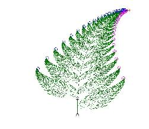
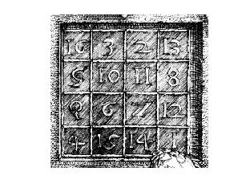

|  | ECS130Scientific ComputationWinter 2017 |
 |
| Date | Topics | Handouts/Homeworks |
|---|---|---|
| 1/9 | Introduction |
MatMatLoop.m,
MatMatDot.m,
MatMatSaxpy.m, MatMatVec.m, MatMatOuter.m, MatMatBenchmark.m |
| 1/11 | Linear systems 1 | Handout A on triangular systems (pdf)/
(latex source) myfscomponent.m, myfsrow.m, myfscolumn.m myfstest.m, FSbenchmark.m |
| 1/13 | Linear systems 2 | Handout B on LU (pdf)/
(latex source) lutx.m, bslashtx0.m, forward.m, backsubs.m Homework 1 |
| 1/16 | holiday, no class | ... |
| 1/18 | Linear systems 3 | Reading: Sections 2.1-2.7 |
| 1/20 | Linear systems 4 | Handout C on norms Reading: Sections 2.8 and 2.9 |
| 1/23 | Floating-point arithmetic 1 | Lecture notes on floating-point arithmetic Reading: section 1.7 |
| 1/25 | Floating-point arithmetic 2 | Homework 2
(latex file) Extra reading: Disasters (Vuik), Disasters (Arnoldi) Bugs (Huckle) |
| 1/27 | Data interpolation 1 | polyinterppower.m,
polyinter.m,
horner.m example1, example2, example3 Reading: Section 3.1 |
| 1/30 | Data interpolation 2 | piecelin.m,
pchiptx.m,
splinetx.m example4, example5, example6+data Reading: Section 3.2 |
| 2/1 | Least squares and curve fitting 1 | Reading: Sections 5.1, 5.2, 5.3 |
| 2/3 | Least squares and curve fitting 2 | Reading: Sections 5.5 qrsteps.m |
| 2/6 | Midterm 1 | Review checklist |
| 2/8 | Least squares and curve fitting 3 | Reading: Sections 5.4, 5.5, 5.6 Homework 3 (latex file) rungeinterp.m, censusgui.m |
| 2/10 | Eigenvalues and Singular Values 1 | Handout D on eigenvalues (theory) Reading: Sections 10.1, 10.2, 10.3 |
| 2/13 | Eigenvalues and Singular Values 2 | Handout E on eigenvalues (algorithms) powermethod1.m, powermethod2.m Reading: top 10 algorithms |
| 2/15 | Eigenvalues and Singular Values 3 | Handout F on SVD svd4image.m |
| 2/17 | no class | ... homework 3 |
| 2/20 | holiday, no class | ... |
| 2/22 | Zeros and roots 1 | Mini-Project Assignment Mini-Project Grading checklist |
| 2/24 | Zeros and roots 2 | Reading: Sections 4.1 -- 4.5 Examples: Bisection, Newton1, Newton2, Secant, IQI, fzerotx |
2/27 | Recap: interpolation, least squares, eigenvalues and singular values | ... |
| 3/1 | Midterm 2 | Review checklist |
| 3/3 | Optimization 1 | Handout G on opt. Examples: (1) Newton's method and SD methods (2) LS by GD (data) |
| 3/6 | Optimization 2 | Homework 4, due 4pm, March 13, (tex file) |
| 3/8 | Sparse matrix operations in MATLAB by Dr. Robert Schreiber of HP Labs. | davisclass.m and meshnd.m |
| 3/10 | Optimization 3 |
Final project assignment (inquire about early-bird bonus) Download: mnistdata_upload.m; viewdigit.m; mnistdata.mat Report guideline/checklist |
| 3/13 | DFT and FFT | DFTDirect.m,
DFTRecur.m,
DFTbenchmark.m Reading: Chapter 8 |
| 3/15 | FFT and final project discussion | ... |
| 3/17 | Final review (instruction ends) | ... |
| 3/20 | 6:00pm, Final Project Report Due | ... |